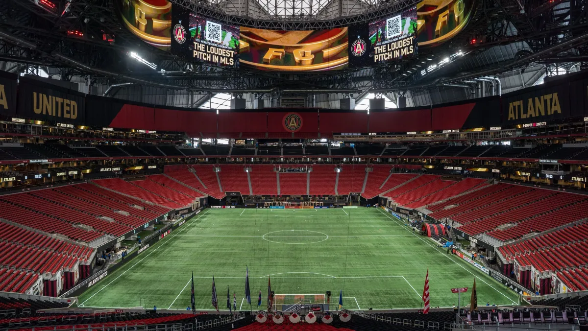
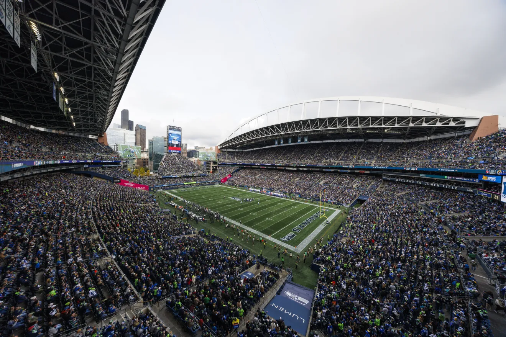

Marcado por paralisações, Mundial de Clubes tem apenas um estádio coberto

Alertas de tempestade e interrupções nos jogos têm causado polêmica no Mundial de Clubes
O Mundial de Clubes está ficando marcado por um fato que vai além do futebol: as paralisações por mau tempo. E dentre os 12 estádios utilizados na competição, apenas um deles possui cobertura para evitar estas situações.
Estando apenas no início da segunda rodada, três partidas do Mundial já foram paralisadas por raios na área do estádio ou alertas de tempestade próximos à região.
Mamelodi Sundwns x Ulsan HD, no Inter&Co Stadium, em Orlando; Pachuca x RB Salzburg, no TQL Stadium, em Cincinnati; e Palmeiras x Al Ahly, no MetLife Stadium, em Nova Jersey.
Porém, aqueles que forem jogar em Atlanta, no estado da Geórgia, não terão este problema. O Mercedes-Benz Stadium é o único com teto retrátil, capaz de evitar as incomodas paralisações por alerta de tempestade.
Mercedes-Benz Stadium é o único coberto do Mundial de Clubes
Casa do Atlanta Falcons, franquia da NFL, e do Atlanta United, time da MLS, o Mercedes Benz-Stadium é um dos mais modernos do mundo, e foi inaugurado em 2017.
A capacidade total do estádio ultrapassa os 73 mil espectadores.
O valor total da obra foi acima de 1,6 bilhões de dólares, equivalente a R$ 8,7 bilhões na cotação atual.
Sede do Mundial de Clubes, o estádio também receberá jogos da Copa do Mundo de Seleções de 2026.
Jogos do Mundial de Clubes no Mercedes-Benz Stadium
Ao todo, seis jogos serão disputados ao longo de todo o Mundial.
Pela fase de grupos, os jogos entre Chelsea e Los Angeles FC, e Porto e Inter Miami já aconteceram no estádio. Manchester City e Al Ain farão o outro duelo desta etapa do campeonato.
Entrando no mata-mata, dois jogos das oitavas de final serão sedeados em Atlanta, enquanto um confronto das quartas de final acontecerá no Mercedes-Benz Stadium.
Outros estádios cobertos que a Fifa poderia ter escolhido
Nos Estados Unidos não é difícil encontrar estádios com capacidade para receber eventos esportivos do mais alto porte e que também tenham estrutura para se proteger de climas mais severos, seja por calor, chuva, raios ou neve.
Porém, muitos deles possuem gramados sintéticos, e no Mundial de Clubes, a Fifa optou por utilizar apenas palcos com grama natural.
Confira uma lista de estádios cobertos que poderiam ser sedes no Mundial de Clubes:
- AT&T Stadium - Arlington, Texas
- SoFi Stadium - Los Angeles, Califórnia
- NRG Stadium - Houston, Texas
- U.S. Bank Stadium - Minneapolis, Minnesota
- Allegiant Stadium - Las Vegas, Nevada
- State Farm Stadium - Glendale, Arizona